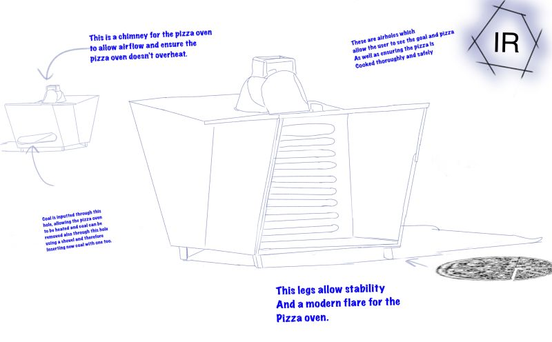

Overview
A pizza oven concept developed sketch-first, then proven in cardboard, then refined in render.
Sketch first, or straight to CAD? I don't think there's a single right answer. For me it's usually where the early thinking happens — fast, rough, low commitment. That said, I go straight into 3D sometimes too, when I already know the form and just want to get it out before the idea moves.
This one's a pizza oven concept, developed sketch first.
How it works
The chimney manages airflow so the oven doesn't overheat. Air holes let you see the coal and the pizza, so you know it's cooking safely and evenly. The coal loads and clears through a side hole using a shovel. The angled legs give it stability and a bit of a modern edge over a traditional build.
Three stages, one idea
From there it went to a quick cardboard mockup to check proportions and form in real space, then into a render to test material and finish intent — walnut veneer body, white powder-coated ends, castors for mobility.
Three very different stages, same idea carried through each one.
Gallery